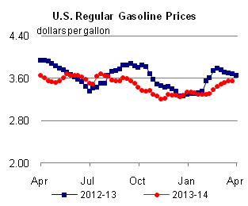
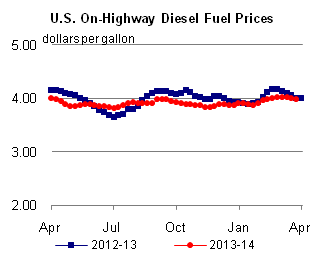
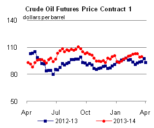
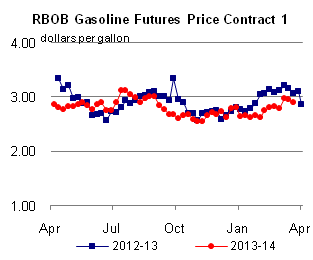
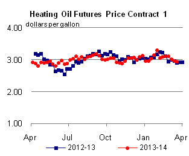
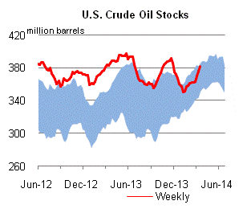
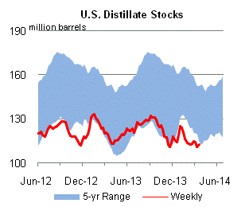
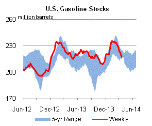
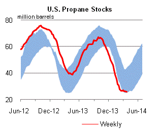

Released: March 26, 2014
Next Release: April 2, 2014
The spring break travel rush and changes in Florida's gasoline supply
Gasoline consumption in Florida typically peaks in March, when seasonal population is high and spring break travelers and baseball fans arrive for some time in the sun. Through the rest of the spring and into the summer, gasoline consumption typically declines as tourism slows and seasonal residents head north to escape the heat (Figure 1). This consumption pattern differs from that of other states, where gasoline consumption typically peaks in July and August and is lowest during the winter months.
{kind=link}
The supply of gasoline into Florida is also changing. Historically, Florida's gasoline was supplied from the U.S. Gulf Coast (USGC) and augmented with imports, particularly from Caribbean refineries. However, since 2007, Florida gasoline consumption (as measured by prime supplier sales) has fallen 90,000 barrels per day (bbl/d) to an average of 465,000 bbl/d in 2013. In 2007, Florida imported an average of 170,000 bbl/d of gasoline. By 2013 average imports were 31,000 bbl/d. That imports have declined more than consumption is partially attributable to Caribbean refinery closures. The 500,000-bbl/d HOVENSA refinery a joint venture of Hess Corp. and Petroleos de Venezuela, on Saint Croix, in the U.S. Virgin Islands, and Valero's 235,000-bbl/d refinery in Aruba used to supply Florida with substantial amounts of gasoline. However, both of these refineries are now idle. As a result, USGC refineries have increased their share of Florida's gasoline supply.
The way in which the USGC supplies Florida has resulted in a tighter market in the state, despite consumption declines because Florida is not connected to the USGC by pipeline, almost all gasoline supplied to Florida is from waterborne cargoes. The ships and barges arrive at ports including Tampa, Port Everglades, Port Canaveral, and Jacksonville (Figure 2). From the storage terminals at these ports, gasoline and other petroleum products are distributed to local markets via tanker truck. The only product supplied to Florida through a pipeline is sourced from a terminal in Bainbridge, Georgia that is connected to a spur of the Colonial system. The terminal in Bainbridge supplies product to Florida's panhandle by tanker truck. The Central Florida Pipeline System, which runs from Tampa to Orlando caries products that arrive at ports in the Tampa Bay area to inland markets within Florida. A short pipeline runs from Port Everglades to Miami and Fort Lauderdale airports, but carries no gasoline.
{kind=link}
The gasoline shipped to Florida from the USGC arrives via a limited fleet of coastwise-compliant U.S.-flagged tankers, articulated tug-barges (ATB), and smaller barges that travel along the Intracostal Waterway and the open waters of the Gulf of Mexico. However, this fleet is relatively small, and increasing demand for vessels to move U.S. crude oil production along the Texas and Louisiana coasts has diverted many vessels that had been moving products to Florida.
Reduced vessel availability for Florida has resulted in fewer spot cargoes of gasoline (shipments without a buyer locked into a long-term purchase contract) available in the state. Thus, an increasing share of Florida's gasoline comes from shipments that are contractually obligated on a long-term basis, which have already chartered coastwise-compliant vessels. This has limited the availability of wholesale gasoline without contractual agreements which can respond to variations in demand.
As a result, gasoline supplies in Florida have been tight and gasoline prices have increased compared with other locations. Retail prices for regular gasoline in Miami, Florida, have steadily increased compared with prices in Houston, Texas and the rest of the Lower Atlantic region. In 2010, Miami retail prices averaged 27 cents per gallon higher than those in Houston. Since December 2012, Miami prices have at times exceeded 40 cents per gallon higher than prices in Houston, and were consistently above that level for most of the past winter (Figure 3).
{kind=link}
The increases in Florida's prices reflect its need to compete for spot cargoes in the Atlantic Basin. Given limited vessel capacity to supply more gasoline to Florida from the USGC and the closure of Caribbean refineries, Florida must now compete with New York Harbor for the available cargoes from Europe and other Atlantic Basin sources.
Gasoline price changes mixed, while diesel fuel slightly lower
The average U.S. regular gasoline price was $3.55 per gallon as of March 24, 2014, unchanged from a week ago, but 13 cents lower than the same time last year. Prices on the East Coast were up less than a penny to $3.53 per gallon, while those in the Rocky Mountains rose slightly but remained at $3.46 per gallon. The Gulf Coast price increased by four cents to $3.32 per gallon, while the West Coast price rose by a penny to $3.82 per gallon. The Midwest gasoline price dropped by two cents to $3.55 per gallon.
The average U.S. diesel fuel price dropped two cents to $3.99 per gallon, two cents less than the same time last year. The East Coast and Midwest diesel fuel prices dropped two cents, to $4.11 per gallon and $3.98 per gallon respectively. The West Coast and Rocky Mountain diesel fuel prices decreased by a penny, to $4.01 per gallon and $3.98 per gallon. The Gulf Coast diesel fuel price was flat, remaining at $3.80 per gallon.
Propane inventories fall
U.S. propane stocks fell by 0.6 million barrels last week to 25.7 million barrels as of March 21, 2014, 15.2 million barrels (37.2%) lower than a year ago. Gulf Coast inventories decreased by 0.7 million barrels and East Coast inventories dropped by 0.1 million barrels. Midwest inventories increased by 0.2 million barrels and Rocky Mountain/West Coast inventories increased by 0.1 million barrels. Propylene non-fuel-use inventories represented 13.4% of total propane inventories.
Text from the previous editions of This Week In Petroleum is accessible through a link at the top right-hand corner of this page.
|  |  | ||||||
| Retail Data | Change From Last | Retail Data | Change From Last | ||||
| 03/24/14 | Week | Year | 03/24/14 | Week | Year | ||
| Gasoline | 3.549 | Diesel Fuel | 3.988 | ||||
|  |  | ||||||||||||||||||||||||||
|
 | ||||||||||||||||||||||||||
| *Note: Crude Oil Price in Dollars per Barrel. | |||||||||||||||||||||||||||
|  |  | ||||||
|  |  | ||||||
| Stocks Data | Change From Last | Stocks Data | Change From Last | ||||
| 03/21/14 | Week | Year | 03/21/14 | Week | Year | ||
| Crude Oil | 382.5 | Distillate | 112.4 | ||||
| Gasoline | 217.2 | Propane | 25.658 | ||||